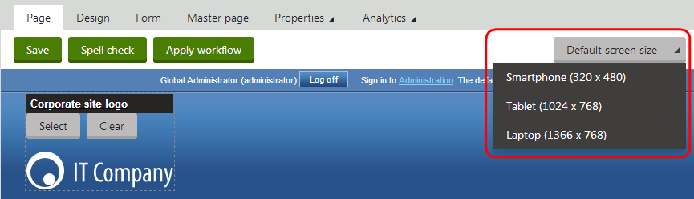

Creating device profiles
Device profiles allow you to customize the layout and content of pages according to the parameters of the devices that visitors use to view the pages.
Enabling device profiles
To start using device profiles, enable the feature in the settings:
Open the Settings application.
Navigate to the Content -> Content management category.
(Optional) Select a site where you want to enable device profiles.
In the Mobile development section, select the Enable device profiles checkbox.
Click Save.
With device profiles enabled, the system evaluates whether the device that is requesting a page belongs to one of the device profiles defined in the Device profiles application.
Creating new device profiles
Open the Device profiles application.
Click New profile.
Type the Display name of the device profile.
(Optional) Set the Preview width and Preview height.
The preview dimensions of the device profile determine the following:
The size of the displaying area when previewing pages in the Pages application.
The maximum size of images if automatic image resizing for devices is enabled.
Fill in the parameters that define which devices belong to the profile. You can combine the parameters as needed.
Property
Description
User agents
Allows you to identify devices based on user agents. The profile includes devices that contain the entered text in their user agent string. You can add multiple entries, each on a new line.
Macro
___________Use the macro rule designer to specify the condition that devices must meet to fit the device profile, or type in any macro condition.
You can use the CurrentDevice object to retrieve data of the current device. See the Device macros and Macro expressions documentation for more details.
Device profiles on the live site
If you want to use device profiles for device detection and server-side design customizations on the live site, we recommend integrating 51Degrees, which allows you to use advanced device macros.
Click Save.
Device profile order
The system evaluates the device profiles from top to bottom according to the list order in the Device profiles application. Devices are assigned to the first matching profile.
To change the order, drag device profiles to a different position using the Move ( ) area or expand the Other actions menu (...) and click Move up / Move down.
Once you create a device profile, it appears in the device selector in the Pages application.

Selecting the device profile in the Pages application
You can then select a device profile using the selector and start creating page layouts for devices, which will be used on individual pages instead of the default layouts if the current device fits the profile. Or you can Map layouts that will replace shared layouts when the current device fits the profile.